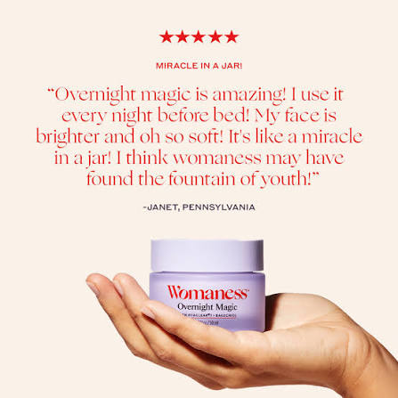

Start with a Clean Slate
A good skincare routine begins with proper cleansing. Washing away daily dirt, excess oil, and makeup prevents clogged pores and prepares your skin to absorb serums and moisturizers effectively. Double cleansing at night is an absolute game-changer.
The Power of Hydration
No matter your skin type—yes, even oily skin—hydration is essential. Ingredients like Hyaluronic Acid and Glycerin draw water into your skin, keeping it plump, healthy, and resilient against environmental stressors. A well-hydrated face is the secret to a natural glow.
Never Skip Sunscreen
Sunscreen is the most important anti-aging product you can own. It protects your skin from harmful UV rays that cause dark spots and fine lines. Apply a broad-spectrum SPF 30 or higher every single morning, whether it is sunny or raining.
Banish Breakouts Gently
When dealing with acne, avoid using harsh physical scrubs. Instead, look for gentle chemical exfoliants like Salicylic Acid (BHA) to unclog pores, and soothing ingredients like Centella Asiatica to calm redness without drying out your skin.
Overnight Repair Magic

While you sleep, your skin naturally goes into repair mode. This makes nighttime the perfect opportunity to use richer creams, sleeping masks, or active ingredients like Retinol to boost cell turnover and wake up with a radiant complexion.
Glow from Within
Great skin isn't just about what you apply on the outside. Drinking plenty of water, eating a balanced diet rich in antioxidants, and getting enough sleep play a massive role in achieving that natural, healthy, and clear complexion.
Patience & Consistency
Skincare is a marathon, not a sprint. It takes time for new products to show real results, usually around 4 to 6 weeks. Stick to your daily routine, be patient with your skin, and you will eventually see the beautiful changes.